Aerial imagery built around the subject.
Explore selected UAVMetric photography across landscape, automotive, and realty work. Each section is organized around a different visual purpose while keeping the same clean, professional aerial perspective.
Place, atmosphere, and scale.
Scenic and elevated imagery focused on terrain, destinations, city context, weather, and the relationship between a subject and its surroundings.
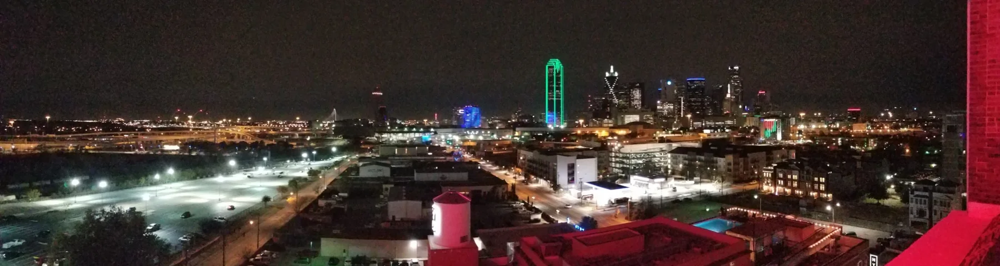
Urban LandscapeNight Skyline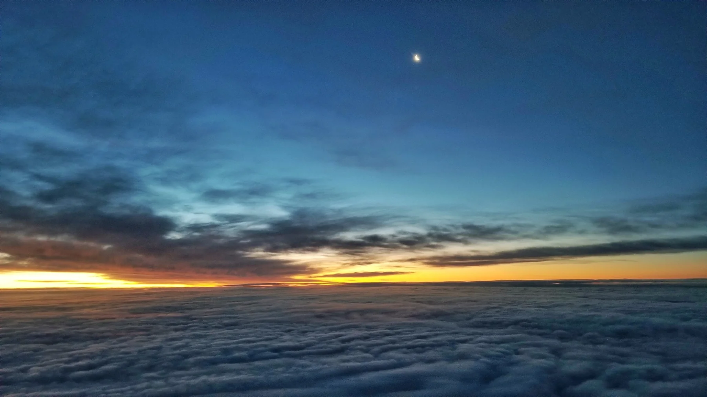
AtmosphereSunrise Above the Clouds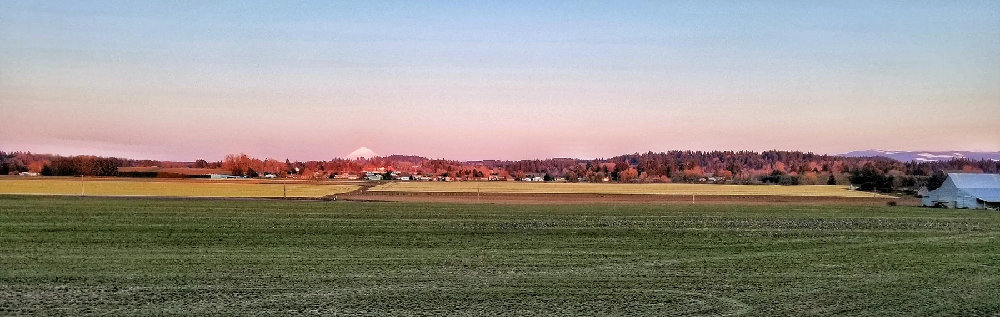
LandscapeRural Mountain Panorama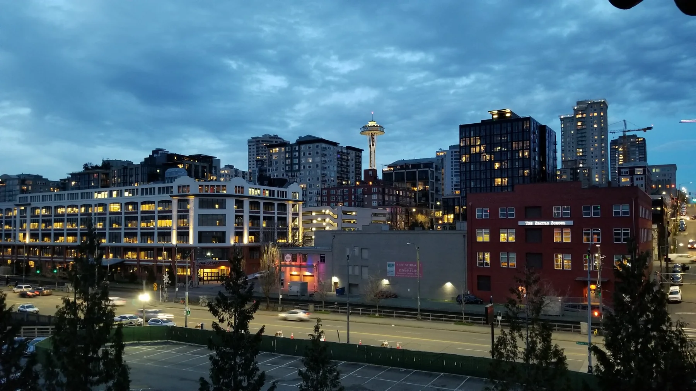
CityscapeBlue-Hour Urban Context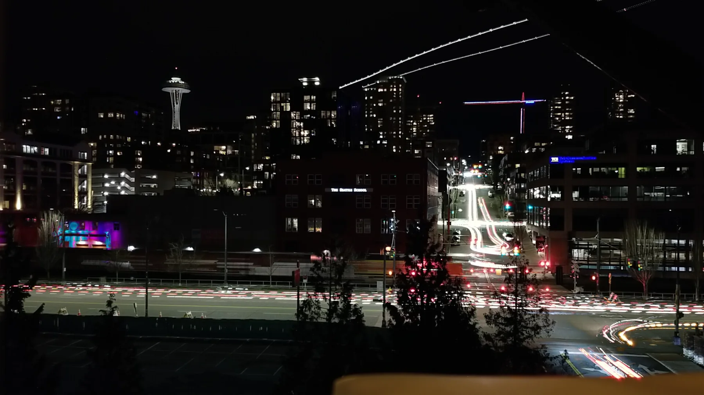
NightLong-Exposure City Detail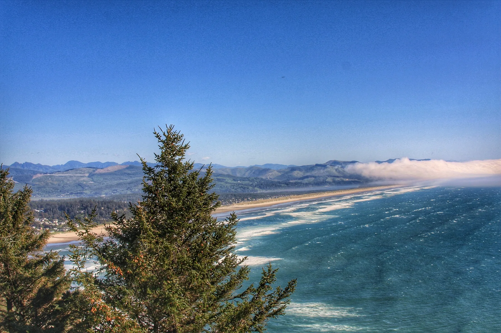
CoastalLandscape & Destination Imaging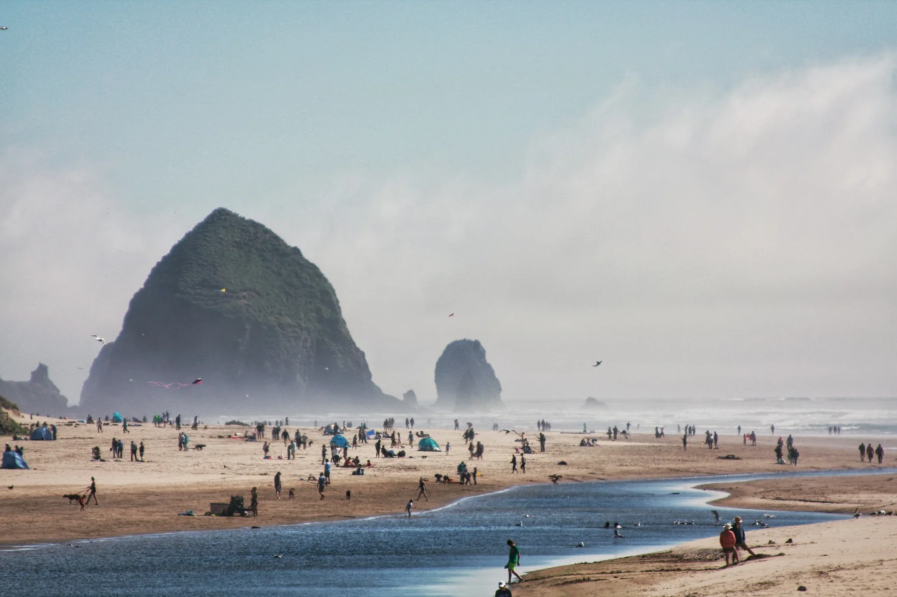
DestinationCoastal Landmark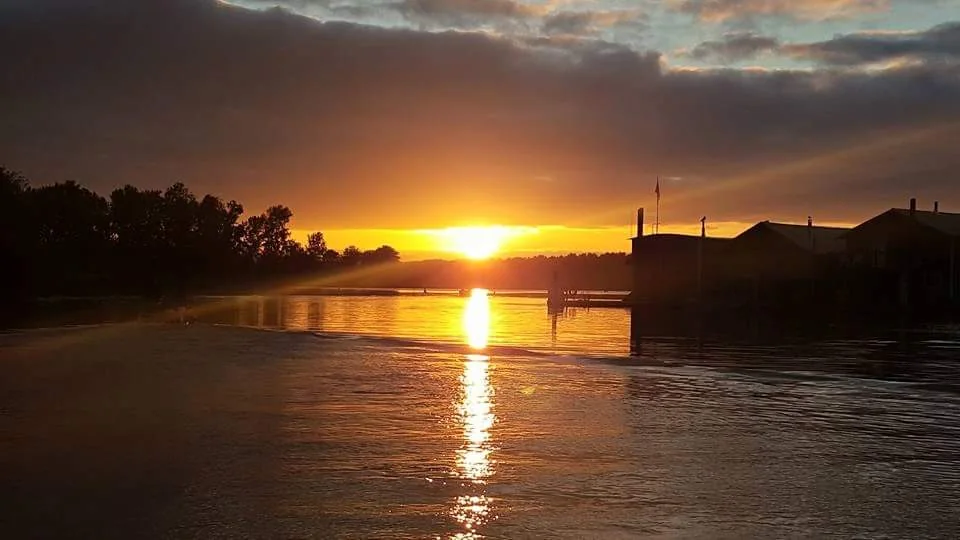
WaterfrontGolden-Hour Imaging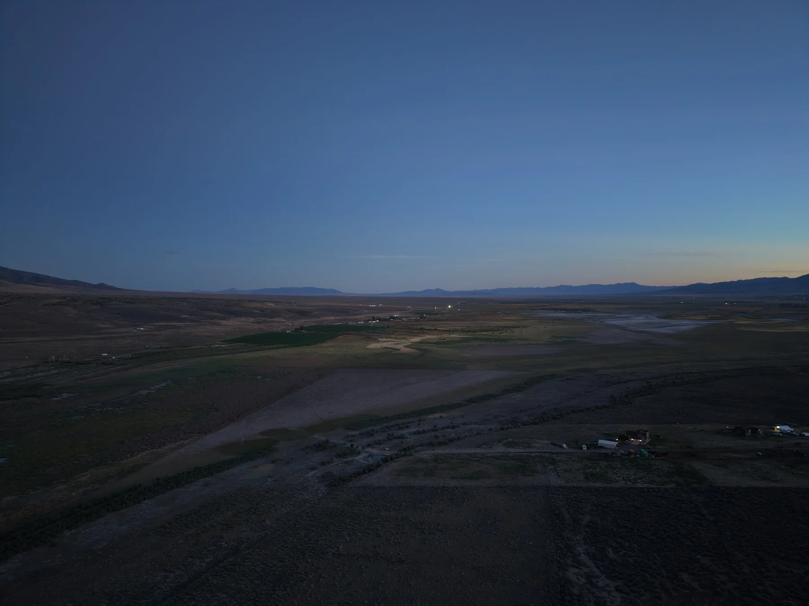
DuskLow-Light LandscapeVehicles with environment and motion in mind.
Automotive and commercial-vehicle imagery designed to show the vehicle as the subject while still using location, scale, and aerial perspective to create context.
Show the property and everything around it.
Realty imagery built to communicate the home or property, surrounding land, access, neighborhood context, and setting in a way ground-level photography cannot.
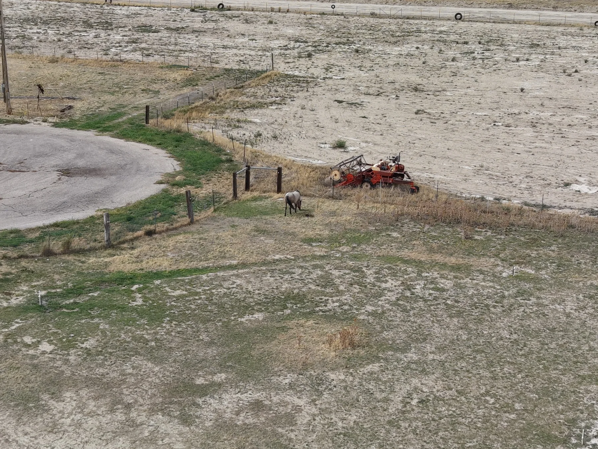
RealtyRural Property Overview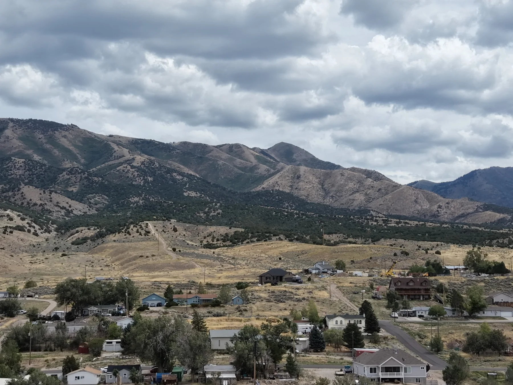
Property ContextCommunity & Mountain Setting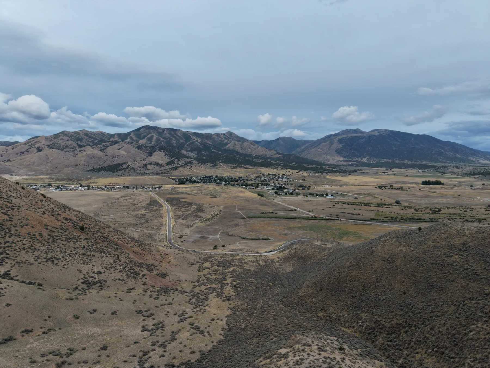
LandRegional Property Context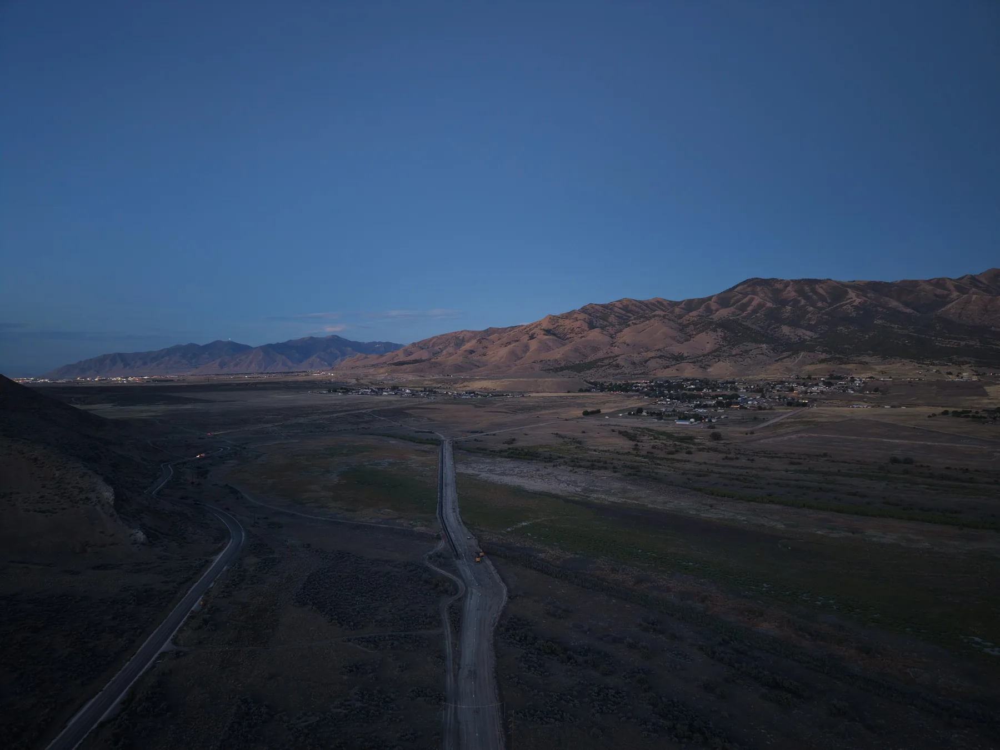
AccessRoad & Site ContextProperty imagery with movement and perspective.
A short aerial sequence can show a home, surrounding property, access, setting, and neighborhood context in a way still photography cannot.
Tell us what you want to show.
Whether the subject is a property, vehicle, landscape, destination, or commercial asset, UAVMetric can plan the imagery around the final use.